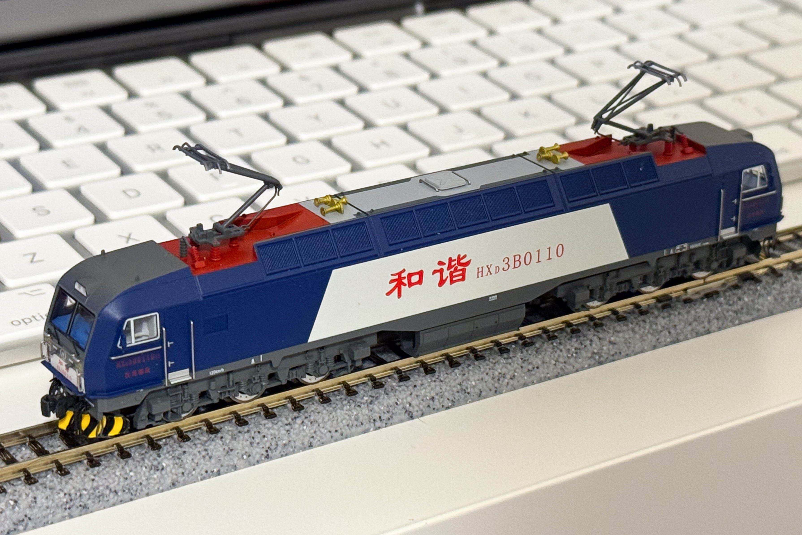
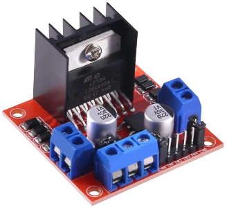
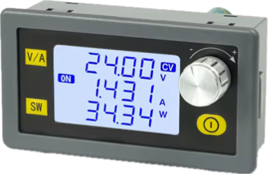
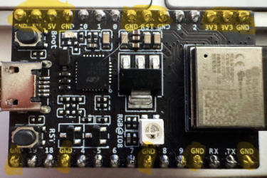
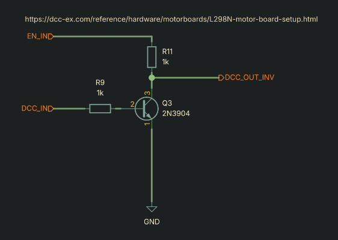
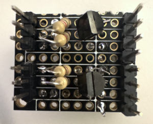
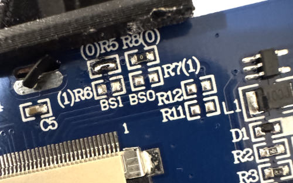
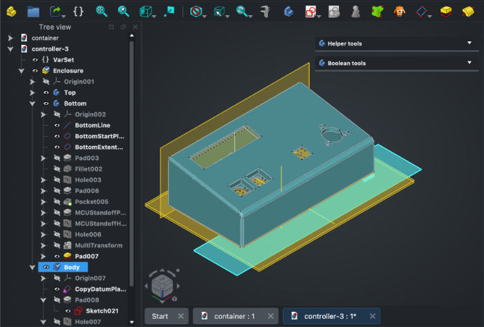
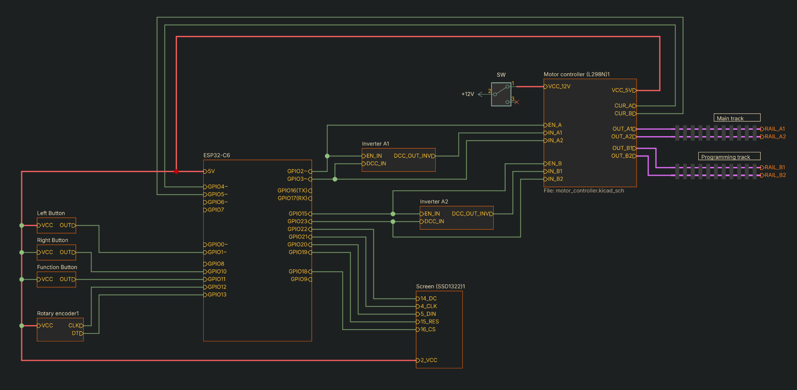
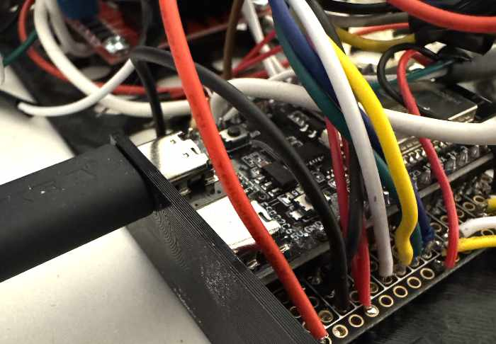

Building a model locomotive controller with embedded Rust
Do you have too many electronic components? Do you have a drawer full of $1 microcontroller dev boards? And, critically, do you have a 3D printer and nothing to print? Congratulations! You're going to put everything to good use by getting really into model railways.
DC controlled locomotives
Conventional model trains use DC power of variable voltage controlling speed. It's not very interesting. It actually kind of sucks. Running a loco 1 at very low speeds means very low voltage. Corroded connections and decades of rail gunk leads inconsistent power. These are workable issues - for permanent installations, adding multiple connection points, or running a wire in parallel to the track connecting at every segment can help. But, can multiple trains run at once? On a traditional system with no modifications, two locos cannot receive independent controls 2.

DCC
DCC (Digital Command Control) is one solution to this problem. It uses digital signals, instead of variable voltage, to control locomotive speed, accessories, and other functions. Consistent power helps eliminate reliability issues due to low voltage, and digital control enables each loco or accessory to receive independent instructions.
DCC sends commands to locomotives and accessories without the need for a third data rail; the signal is comprised of pulses of variable widths. A short pulse is a 1, and a longer pulse is a 0. The microcontroller generates these pulses, which are then powered by a motor driver at ~12V. The signal of one rail is inverted in order to create a consistent electric potential.
Building a controller
There's already billion DCC-compatible controllers on the market, but we're trying to use up all of our spare components, so we're building our own. The first thing we'll need to do is buy some more components: a motor controller and a power supply.
Motor controller
I purchased this module for about $2. It's important to understand that no motors are directly controlled with this module; the part I care about is the H-bridge 3.

Following the guide on dcc-ex.com, I added a couple current sense resistors. These are helpful for detecting shorts or stuck motors, shutting off the driver to prevent damage 4. I found that a combination of clipping the pins on the top of the board and soldering wires to pads on the back was easy enough. The guide also instructs to remove the jumpers keeping the enable pins high, so that we can control them manually via our MCU. It also instructs to remove the jumper from the power regulator if over 12V, however, after looking up the data sheet for my board, it appears the regulator IC used in my specific module is the LM76M05, and it can handle 2 to 35V input, so I kept the jumper on and used it to power the MCU.
Make sure your board's regulator can handle the voltage you're throwing at it, or remove the power regulator jumper.
Motor channels and programming tracks
The L298N is a 2 channel motor driver, meaning we can drive two separate tracks at once. If you wanted double the advertised 2A per channel, you could common each input and output. I thought this would be a good idea, but learned that DCC utilizes something called a "programming" track, and an "operations" track, so 2 separate channels is actually useful if we want to be able to program locos while a normal operations track is also running.
Each channel has two input bit pins, with the following truth table 5:
| Input 1 | Input 2 | Direction |
|---|---|---|
0 | 0 | Off |
1 | 0 | Forward |
0 | 1 | Backward |
1 | 1 | Off |
Power supply
I also picked up this very small power supply and regulator, which has the important trait of current limiting so that I'm not relying solely on software to prevent catastrophic failure. A rail layout is essentially a long route of unshielded wires; a short is very likely, if not unavoidable. (Adding some additional protection like a fuse or software shutoff probably wouldn't be a terrible idea either).

Hooking up the modules
TrainElectronics.com helpfully includes a schematic, albeit with a different motor driver. I adopted this to my own schematic based on the ESP32-C3, and eventually the C6. The ESP-C boards are fun and relatively inexpensive, but the C3 has a few clones with limited GPIO. I ended up purchasing a replacement ESP32-C6 board with several more pins that I'll be transitioning to later on, but the difference between the two is seemingly very negligible for my use case.

I use a circuit to invert the signal 6, as opposed to inverting using software with 2 separate pins (this is an option with DCC-EX). However, I don't see the benefit to doing this. It's a super simple circuit to create, allows for a simpler software implementation, and frees up an extra pin. It's not super clear by looking at it, but it appears that inputs 1 and 3 get the inverted signal, whereas 2 and 4 get the original signal 7.


Digging into DCC
Before we can transmit anything, we need a way to build and serialize DCC data. Thankfully, a DCC crate called dcc-rs already exists, albeit on an outdated version of hal. This is easily remedied with a few quick updates. Now we just need a way to spit the data out to our motor controller.
DCC bits are distinguished based on the length of their pulse. At first, I attempted a bitbang solution with the dcc-rs library, but my timing was always too slow or completely off when taking a look in Pulseview. I tried changing timing, adding manual delays, and other hacks, but was never getting consistent results. Thankfully, the ESP32-C3 and C6 offer a hardware peripheral called "Remote Control Transceiver" or RMT that can help. IR remotes use a similar method of transmitting bits, and we can use this device to generate the signal we want quickly8. Using this method, I was able to successfully decode within Pulseview and send a signal to a commercial DCC decoder.
// Building a pulse sequence and transmitting with the RMT peripheral
for (bit, pulse) in new_data[..len].iter().zip(pulse_buffer[..len].iter_mut()) {
*pulse = match *bit {
true => PulseCode::new(
false,
dcc_rs::ONE_MICROS as u16,
true,
dcc_rs::ONE_MICROS as u16,
),
false => PulseCode::new(
false,
dcc_rs::ZERO_MICROS as u16,
true,
dcc_rs::ZERO_MICROS as u16,
),
};
}
rmt.transmit(&pulse_buffer[..len + 1]).await.unwrap();
// Much easier than trying to juggle timers!Note: Receiving data
I didn't end up with a working solution for receiving DCC data, but did learn a few things about optoisolators. I've used these previously to decode MIDI data from keboards and synthesizers, using a
6N138. It turns out that this is a little too slow for our applications, and the6N137is more commonly recommended as it is faster. The info around all this stuff, like MIDI, is pretty dated, and apparently nowadays digital isolators exist that are superior.
Note: Why not wireless?
Why even go through this trouble when wireless communication exists? That is an excellent question - especially when the ESP32 boards I'm using support wireless, and even have mesh network support. I wanted to write this in Rust, which didn't have great support for what I was looking for at the time of writing. Plus, using DCC grants a ton of compatibility with commercial accessories and locomotives, as many come "DCC ready". If you are interested in mesh network control of locos, someone's already done that!.
Display
I bought an OLED screen labeled SSD1322. Despite being grayscale, it's relatively large, extremely bright, and has excellent support with the ssd1322_rs crate. The units I found on Aliexpress needed to be converted to "4 wire" SPI by soldering some bridges. Note that I was unable to get it working with the advertised 3 wire mode, (even though we aren't using MISO).

Housing
Before this project, I used SolveSpace - a relatively simple parametric CAD program. However, around this time, FreeCAD 1.0 was released with a ton of improvements that made it much more stable and all-around sort-of-usable, so I decided to give it a go. I was able to create a simple housing and print a successful fit after a few attempts.

FreeCAD is still very rough around the edges, but it's usable, and much more powerful than SolveSpace. The normal thing to do would be to just use SolidWorks, but I'm too cheap.
Putting everything together


I used a very neat library for the UI called Kolibri. I'm surprised how seemingly relative few people are working in the Rust embedded graphics/UI space, since these projects are a lot of fun. Kolibri does not yet support devices without a pointer, so I achieved my effect with a "virtual pointer" that moves a set distance to each interactive element on the UI.
Rust on embedded
The source code for this project, including the KiCAD and FreeCAD files, is freely available.
A few thoughts after approaching a larger embedded project:
- Embassy makes embedded development much more approachable, even more than RTIC, which was my previous go-to.
- Espressif and STM chips seem to be among the best supported by embedded Rust, and getting set up is far simpler than it used to be.
- The Rust embedded ecosystem is relatively small compared to something like its game development scene, but it's still full of highly knowledgable, helpful, and friendly people who help make this language both approachable and powerful.
Footnotes
This seems to be the right lingo but I wish I could just say "train".
Some people set up blocks of DC control but honestly that seems like such a hassle, and I'm pretty sure I'd burn down my house.
It also probably has some protection built in for driving inductive loads which is helpful.
I didn't explore it yet, but current sense is also used in a bi-directional extension to DCC called Railcom.
This upsets me greatly as an audio person who percieves the first channel as left and default.
The popular FastLED library for Arduino also works by utilizing the RMT device.